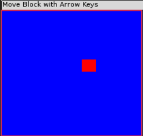

OpenGL特殊按键响应和简单动画
Table of Contents
1 特殊按键
GLUT提供了另一个回调函数，即 glutSpecialFunc 。它注册了一个能够在按一个特殊按键时被调用的函数。在GLUT的语法中，特殊按键是指功能键或者方向键（ ↑ 、 ↓ 、 ← 、 → 箭头键， PgUp 、 PgDn 键等）中的一个。在主函数中加入下面的代码行，来注册SpecialKeys回调函数。
glutSpecialFunc(SpecialKeys);
它在按键时接受一个相应的按键编码，以及在使用鼠标时光标的x和y坐标位置（像素形式）。
1.1 示例程序
CANNOT INCLUDE FILE ./program/opengl/Src/Chapter02/Move/Move.cpp
1.2 MakeFile
1.3 输出

1.4 分析
在“Move” 示例程序中，我们将顶点存储在一个全局（对于这个模型来说）数组中，这样我们就能够在按键时相应修改正方形的位置了。
这里我们还进行了碰撞检测，这样正方形就不会移出窗口范围了。请注意，我们可以轻松地更新批次位置，只需复制新的顶点数据即可。
SpecialKeys 函数的最后一行代码用来告诉GLUT需要更新窗口内容。
glutPostRedisplay();
默认情况下，在窗口创建、改变大小或者需要重绘时，GLUT通过调用RenderScene函数来更新窗口。只要窗口发生最小化、恢复、最大化、覆盖或重新显示等变化，就会发生更新。我们可以 人工 调用 glutPostRedisplay 来告诉GLUT发生了某些改变，应该对场景进行渲染了。不过，用后面将要介绍的方法来完成这项工作尤其方便。
2 简单的动画片
如果我们将 glutPostRedisplay 函数调用在 RenderScene 函数末尾，我们将得到一个持续自动刷新的程序。利用这个特点我们可以实现一个简单的动画。别担心， 这并不是一个无限循环 。重绘消息实际是一条传递到一个内部消息循环中的消息，在屏幕刷新的间隔中，也会发生其他窗口事件。这就是说，我们仍然可以检测按键动作、鼠标移动、改变窗口大小和程序结束等动作。
2.1 示例程序
CANNOT INCLUDE FILE ./program/opengl/Src/Chapter02/Bounce/Bounce.cpp